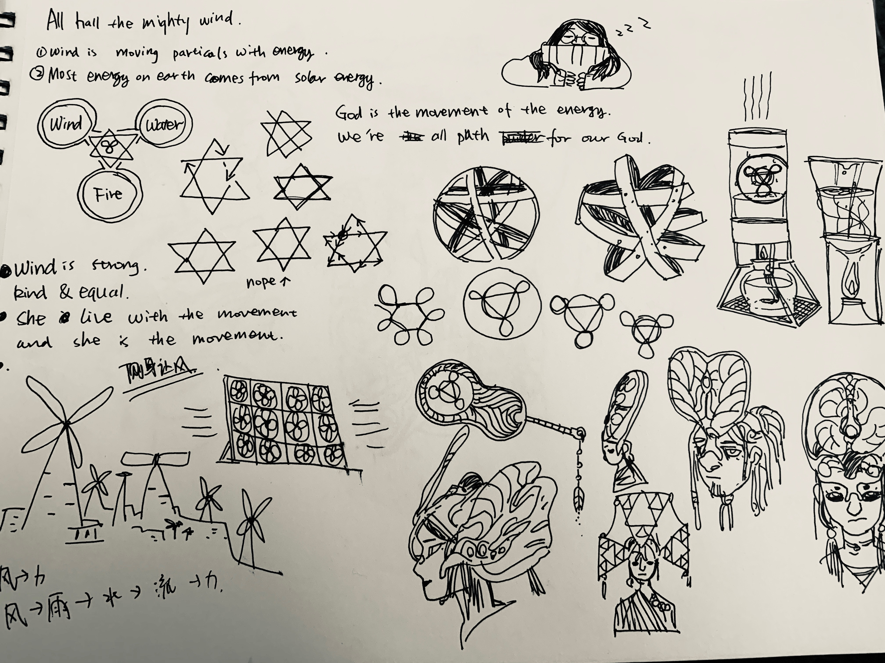
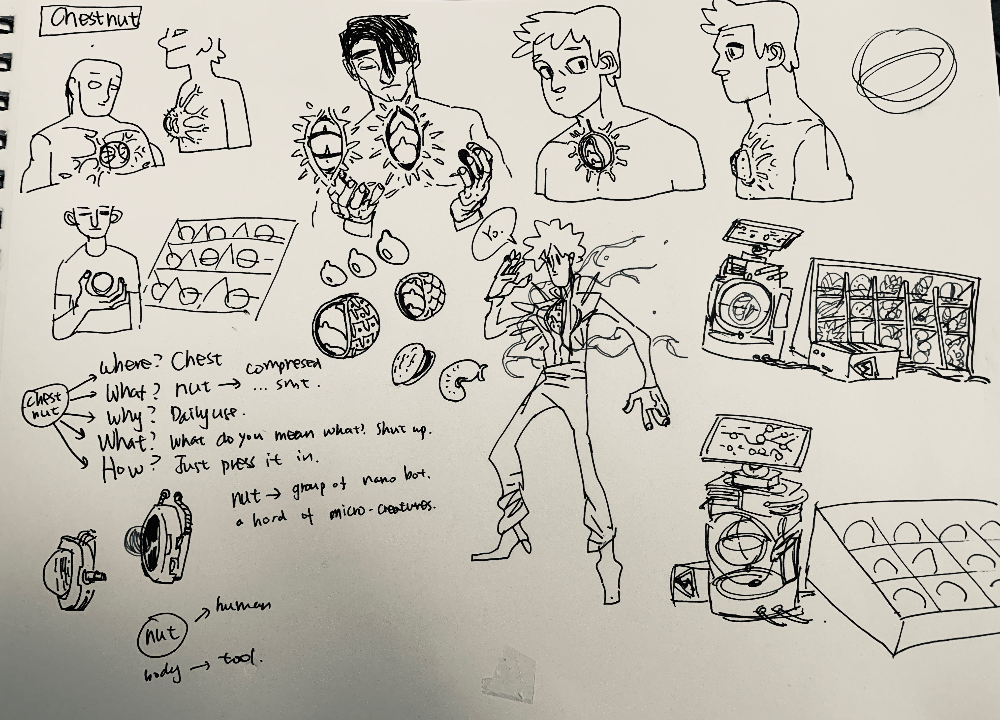
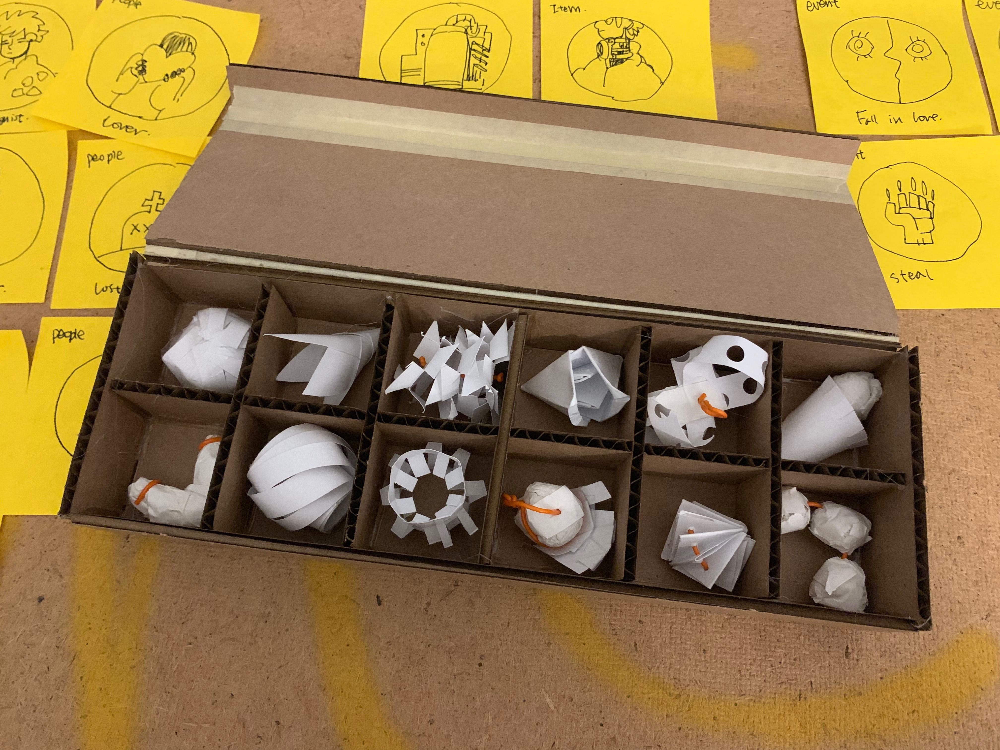
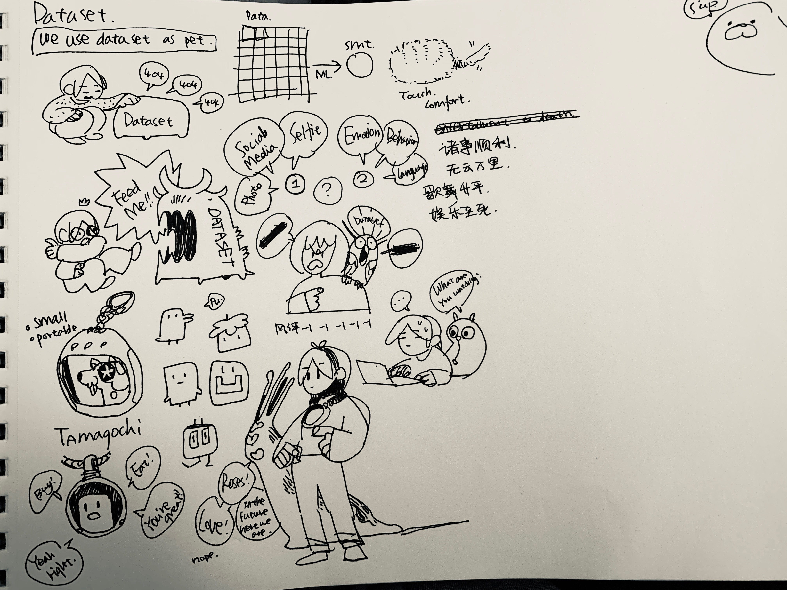
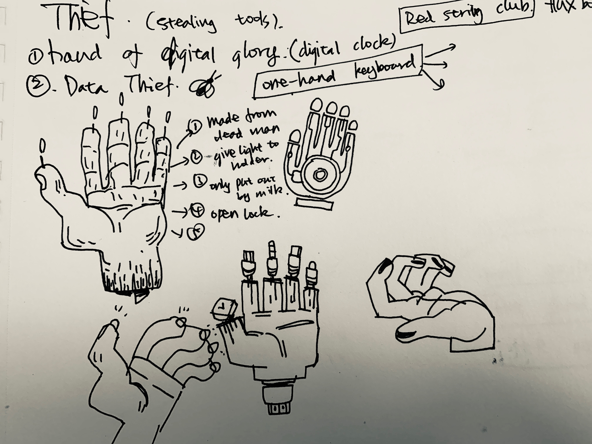
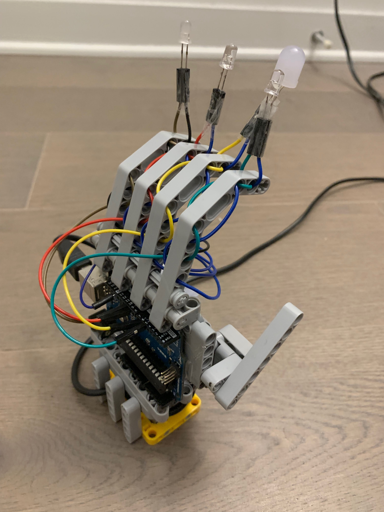
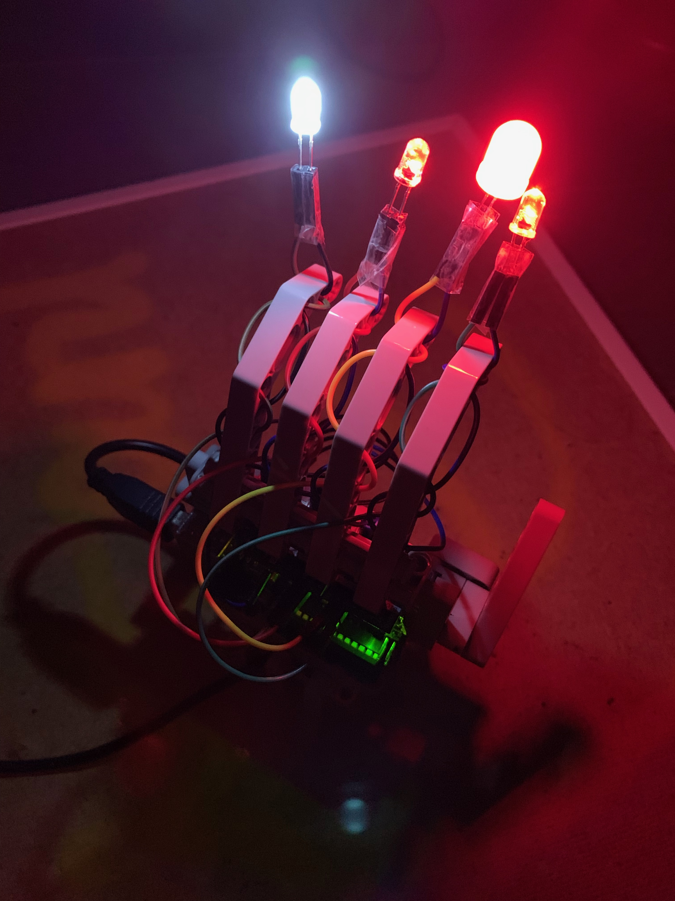
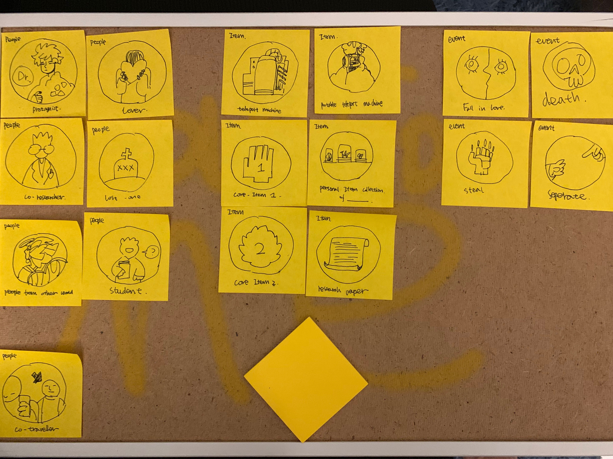

Week 10 7in7
So what is my 7in7 is about?
At the begining it's about testing different ways to create objects in different words and also building the world where the object lives in. So I asked 7 friends for 7 random words and built my 7in7 around them.
- Day1: Wind
- Day2: Chestnut
- Day3: Dataset
- Day4: Theft
- Day5: Ring
- Day6: Trees
- Day7: Cool
But then after my talk with Liza I stoped at day5 and switched into testing narrative and ways to fast prototyping main storyline.
Day 1: Wind
The gods that people believe in this world are the gods of energy flow. People have used wind energy as a driving force since ancient times. People believe that all the energy in the world is a variant of wind energy. People think that human beings are the path of Fengshen, so they will wear huge headpieces on their heads. When they walk, they will cause air to flow, representing their energy to the transfer of energy in nature.
Day 2: Chestnut
Chestnut is a form of human survival. In this world, due to superb biological technology, human beings have successfully rid themselves of the physical bondage and extracted the so-called "human soul" or "human spirit" in a reservoir. Different people will have different shapes of storage.
 Day 3: Dataset
Everyone in this world needs to keep an electronic pet generated by your database. This pet will accompany you and bring you emotional support, but at the same time, he is also the government's servileness tool. The pet's database constantly monitors the information you process every day, including social media records, daily mood swings, spoken language styles, tone of voice, and changes in their image, behavior, and style of speaking based on this information.
Day 4: Theft
The glorious hand of electronics is a tool of theft. It was made by the left hand of a robot that was stopped by the government by breaking the three laws of the robot and harming humans. When the user connects it to the computer, the user will connect to the network connection provided by others that cannot be discovered by others, and all password verification can be automatically filled when using is network.
  Day 5: Story Prototype: Elements
For this I shifted from making worlds and objects to making narritives. I made groups of elements that might appears in my main storylines and use this as a way to quickly genrate different stories.
Day 6: Story Prototype: Storylines
I used the story-prototyping tool that I made to generate some stories that I think make sense at this stage. They all lack of details and plots but they have beginings, majoer events and endings.
image uploading soon.
Day 7: scene setup
At last I tried to combine all I have made and make them into a super small version of what my thesis might be and test if this way of storytelling works.
image uploading soon.
10/31/2019 I really like making stuff but also not.